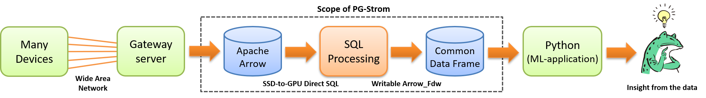

本章では、共通データフレームとPythonスクリプト（PL/Pythonを含む）を用いて、機械学習や統計解析エンジンとPostgreSQLを接続する、あるいはこれらのエンジンを In-database で実行する方法について説明します。
背景
過去のバージョンのPG-Stromにおいては、データベースと機械学習・統計解析エンジンの連携のためにPL/CUDAという仕組みを提供していました。これは、SQLのユーザ定義関数としてCUDA Cのコードを記述し、計算集中的なワークロードをGPUの持つ数千コアのプロセッサで処理する事を可能にするもので、場合によってはCPUの百倍以上の処理速度を実現する事もありました。
しかし一方で、機械学習や統計解析の領域では多くの場合Python言語から利用できるモジュールを組み合わせてアプリケーションを構築するのが一般的な流れとなり、個々のデータサイエンティストがCUDA C言語で並列プログラムを記述するというケースは稀でした。
PG-Strom v2.3以降では、データベースの内容をPython向け機械学習・統計解析用モジュールと共通形式のデータフレームとして交換する事が可能で、データをエクスポートする事なくGPUの計算能力を利用するというPL/CUDAの特徴を引き継ぎつつ、Python言語による高い生産性を両立しています。

本章で説明する機能は、基本的にはオンメモリ処理が可能なデータ量を対象としたものです。 したがって、テラバイトを越えるような大きさのデータをPythonから参照可能なデータフレームとして見せるために使用すべきではありません。
これは例えば、大規模な生ログデータはSSD-to-GPU Direct SQLを用いて前処理し、次にこれを共通データフレームを介してPython上の機械学習エンジンに入力するといった使い方を想定しています。
cuPyを用いたデータ交換
cuPyとは、Python環境において行列演算ライブラリとして広く使われているnumPyと共通のAPI群をもち、その演算をGPU上で実行するためのライブラリです。
cuPyが計算に利用する行列データはGPU上に配置され、cupy.ndarray型のオブジェクトとしてスクリプト上から操作する事が可能です。cuPyのインストールやAPIリファレンスなどは、公式ドキュメントをご覧ください。
PG-StromはArrow_Fdw外部テーブルに保持されたデータをGPU上に展開し、Pythonスクリプトの実行環境に当該メモリ領域をマップする事ができます。これにより、データベースからデータをエクスポートする事なくスマートにデータ交換を行う事ができます。
PG-StromのSQL関数pgstrom.arrow_fdw_export_cupy()はGPUデバイスを割り当て、Arrow_Fdw外部テーブルの内容をロードします。この関数は外部テーブル、ロードすべき列名、およびターゲットのGPUデバイスID（省略可）を引数に取り、当該GPUバッファの識別子をtextで返します。
Pythonスクリプト側ではcupy_strom.ipc_import()にこの識別子を与えて、GPUデバイスメモリ上に展開済みのcupy.ndarrayをオープンします。以下に実例を示します。
PostgresSQL側のオペレーション
=# CREATE FOREIGN TABLE ft (
id int,
x real,
y real,
z real
) SERVER arrow_fdw
OPTIONS (file '/dev/shm/ftest.arrow', writable 'true');
=# INSERT INTO ft (SELECT x, pgstrom.random_int(0,1,10000)::float/100.0,
pgstrom.random_int(0,1,10000)::float/100.0,
pgstrom.random_int(0,1,10000)::float/100.0
FROM generate_series(1,5) x);
=# SELECT * FROM ft;
id | x | y | z
----+-------+-------+-------
1 | 51.61 | 73.23 | 7.53
2 | 49.73 | 29.75 | 37.31
3 | 61.15 | 55.15 | 36.07
4 | 23.76 | 40.76 | 51.74
5 | 61.43 | 86.87 | 47.64
(5 rows)
Python側のオペレーション
import psycopg2
import cupy
import cupy_strom
conn = psycopg2.connect("host=localhost dbname=postgres")
curr = conn.cursor()
curr.execute("select pgstrom.arrow_fdw_export_cupy('ft','{x,y,z}'::text[])")
row = curr.fetchone()
X = cupy_strom.ipc_import(row[0])
print(X)
conn.close()
実行結果
$ python ftest.py
[[51.61 49.73 61.15 23.76 61.43]
[73.23 29.75 55.15 40.76 86.87]
[ 7.53 37.31 36.07 51.74 47.64]]
上記の例は、PythonスクリプトからPostgreSQLへ接続し、SQL関数pgstrom.arrow_fdw_export_cupyを用いて外部テーブルftの列x、yおよびzの3列から成るcupy.ndarray用のGPUバッファを作成しています。続いて、その関数の返り値である識別子をcupy_strom.ipc_import関数に渡す事で、Pythonから利用可能なcupy.ndarrayオブジェクトを生成しています。
いったんcupy.ndarrayオブジェクトが生成された後は、既存の cuPy のAPI群を用いてこのGPUバッファを操作する事ができます。ここでは僅か5行x3列のデータを扱いましたが、これが10億行のデータになったとしても、同様にPostgreSQLとPythonスクリプトの間でデータ交換を行う事ができます。
割り当てたGPUバッファはセッションの終了時に自動的に解放されます。セッション終了後もGPUバッファを保持し続けたい場合は、代わりにpgstrom.arrow_fdw_export_cupy_pinnedを使用してGPUバッファを割り当てます。この場合、明示的にpgstrom.arrow_fdw_unpin_gpu_bufferを呼び出してピンニング状態を解除するまでは、GPUデバイスメモリを占有し続ける事に留意してください。
cupy_stromのインストール
前述の操作に必要なcupy_stromパッケージは、setup.pyスクリプトを用いて以下のようにインストールする事ができます。
$ sudo pip3 install --upgrade numpy cupy cython
$ git clone https://github.com/heterodb/pg-strom.git
$ cd pg-strom/python
$ python3 setup.py
cuPyを用いたカスタムGPUカーネルの実行
cuPyは豊富な行列演算APIを持っており、これらを利用する事でCUDA CのプログラミングなしにGPUの計算能力を引き出す事も可能ですが、ユーザが作成したカスタムのGPUカーネル関数を定義し、実行する事も可能です。
以下の例はcupy.RawKernelを使用してカスタムのGPUカーネルを定義したもので、入力値('X')の各列ごとにその平均値を導出するというものです。
cupy.RawKernelオブジェクトの作成には、CUDA Cで記述されたGPUカーネルのソースコードと、GPUカーネルのエントリポイントとなるデバイス関数名が必要で、これは__call__メソッドの呼び出し時に実行時コンパイルが行われます。（ビルド済みバイナリがキャッシュに見つからなければ）
__call__メソッドの引数は順にグリッドの大きさ、ブロックの大きさ、およびGPUカーネル関数への引数です。詳細な説明は省きますが、入力値Xを2048個の要素ごとに領域分割し、1024個のスレッドが相互に協調動作を行い、11回のステップで各ブロックの総和を計算します。これが各ブロック毎に並列に実行され、最終的に出力バッファYには列ごとの総和が格納される事になります。
import psycopg2
import cupy
import cupy_strom
// connect to PostgreSQL, and get identifier of GPU buffer
conn = psycopg2.connect("host=localhost dbname=postgres")
curr = conn.cursor()
curr.execute("select pgstrom.arrow_fdw_export_cupy('ft','{x,y,z}'::text[])")
row = curr.fetchone()
// import GPU buffer using the identifier string
X = cupy_strom.ipc_import(row[0])
nattrs = X.shape[0]
nitems = X.shape[1]
gridSz = (nitems + 2047) >> 11;
Y = cupy.zeros((nattrs))
// source code of the custom GPU kernel
source='''
extern "C" __global__
__launch_bounds__(1024)
void
kern_gpu_sum(double *y, const float *x, int nitems)
{
__shared__ float lvalues[2048];
int gridSz = (nitems + 2047) / 2048;
int colIdx = blockIdx.x / gridSz;
int rowBase = (blockIdx.x % gridSz) * 2048;
int localId = 2 * threadIdx.x;
int i, k;
// Load values to local shared buffer
x += colIdx * nitems;
for (i=threadIdx.x; i < 2048; i+=blockDim.x)
lvalues[i] = (rowBase + i < nitems ? x[rowBase + i] : 0.0);
__syncthreads();
// Run reduction operations
for (k=0; k < 11; k++)
{
int mask = ((1 << k) - 1);
if ((threadIdx.x & mask) == 0)
lvalues[localId] += lvalues[localId + (1<<k)];
__syncthreads();
}
// Write back the total sum
if (threadIdx.x == 0)
atomicAdd(&y[colIdx], lvalues[0]);
}
'''
kern = cupy.RawKernel(source, 'kern_gpu_sum')
kern.__call__((gridSz * nattrs,1,1),
(1024,1,1),
(Y,X,nitems))
print(Y / nitems)
conn.close()
実行結果
=# SELECT pgstrom.arrow_fdw_truncate('ft');
=# INSERT INTO ft (SELECT x, pgstrom.random_int(0,1,10000)::float/100.0,
pgstrom.random_int(0,-7500,2500)::float/100.0,
pgstrom.random_int(0,5000,15000)::float/100.0
FROM generate_series(1,1000000) x);
=# SELECT avg(x), avg(y), avg(z) FROM ft;
avg | avg | avg
------------------+-------------------+------------------
50.0225953391276 | -24.9964806686448 | 100.037490822002
(1 row)
$ python ftest.py
[ 50.02259536 -24.99648063 100.03749086]
意図的に各列の分布をずらしたテストデータによる平均値の計算ですが、GPUバッファを介してcuPyとデータ交換を行い、カスタムGPUカーネルで計算した平均値と、SQLでの計算結果が一致している事が分かります。
PL/Pythonユーザ定義関数からの利用
PostgreSQLではPython言語によるユーザ定義関数の記述が可能で、標準で同梱されているPL/Pythonパッケージがその機能を提供します。
CREATE FUNCTION構文のLANGUAGE句にplpython3uと指定する事で、そのユーザ定義関数はPythonで記述されている事を示します。
以下にPL/Pythonユーザ定義関数の例を示します。平均値を求めるGPUカーネル関数にはもう一度登場してもらう事にします。
PL/Pythonユーザ定義関数の引数は、適切なPythonデータ型にマッピングされます。ここでは、SQL関数pgstrom.arrow_fdw_export_cupyの返却するGPUバッファの識別子(text)を引数として受け取り、これをPython側ではcupy.ndarrayにマッピングして参照します。シェル上でスクリプトを実行する場合と大きな違いはありません。
ただ一点だけ、GPUカーネルを実行してXの列ごとの総和をYに格納した後、Xに0を代入して明示的にcupy.ndarrayを解放するようにしています。
これは、PL/Pythonでスクリプトを実行した場合にXに格納したcupy.ndarrayオブジェクトが生き続けてしまい、識別子で参照したGPUバッファがマップされ続けてしまうためのワークアラウンドです。
PL/Pythonユーザ定義関数の例
CREATE OR REPLACE FUNCTION custom_average(x_ident text)
RETURNS float[] AS
$$
import cupy
import cupy_strom
X = cupy_strom.ipc_import(x_ident)
nattrs = X.shape[0]
nitems = X.shape[1]
gridSz = (nitems + 2047) >> 11;
Y = cupy.zeros((nattrs))
source='''
extern "C" __global__
__launch_bounds__(1024)
void
kern_gpu_sum(double *y, const float *x, int nitems)
{
__shared__ float lvalues[2048];
int gridSz = (nitems + 2047) / 2048;
int colIdx = blockIdx.x / gridSz;
int rowBase = (blockIdx.x % gridSz) * 2048;
int localId = 2 * threadIdx.x;
int i, k;
// Load values to local shared buffer
x += colIdx * nitems;
for (i=threadIdx.x; i < 2048; i+=blockDim.x)
lvalues[i] = (rowBase + i < nitems ? x[rowBase + i] : 0.0);
__syncthreads();
// Run reduction operations
for (k=0; k < 11; k++)
{
int mask = ((1 << k) - 1);
if ((threadIdx.x & mask) == 0)
lvalues[localId] += lvalues[localId + (1<<k)];
__syncthreads();
}
// Write back the total sum
if (threadIdx.x == 0)
atomicAdd(&y[colIdx], lvalues[0]);
}
'''
kern = cupy.RawKernel(source, 'kern_gpu_sum')
kern.__call__((gridSz * nattrs,0,0),
(1024,0,0),
(Y,X,nitems))
X = 0 # unmap GPU memory
return Y / nitems
$$ LANGUAGE 'plpython3u';
PL/Pythonでユーザ定義関数を実装し、カスタムのGPUカーネルを実行する場合、Pythonスクリプトを呼び出すための一連のステップが異なってきます。
シェル上でスクリプトを実行した時とは異なり、SQLの実行中にユーザ定義関数を通じてPythonスクリプトを実行できるため、わざわざセッションを張ったり、SELECT文を実行して識別子を取得する必要はありません。
=# SELECT custom_average(pgstrom.arrow_fdw_export_cupy('ft','{x,y,z}'::text[]));
custom_average
-------------------------------------------------------
{50.0225953554688,-24.9964806318359,100.037490859375}
(1 row)
上記の例では、pgstrom.arrow_fdw_export_cupyの実行結果であるGPUバッファの識別子が、直接ユーザ定義関数custom_averageの引数として入力され、そこでPythonスクリプトとの間でデータ交換が行われています。その後、GPUカーネルが起動され、結果を呼び出し元に返すまでの流れは全く同一です。
外部テーブルftからデータを読み出し、これを引数としてPL/Pythonユーザ定義関数に渡すのとは、PostgreSQL側で取り扱うべきデータサイズが全く異なってくる事に留意してください。 GPUバッファを介したデータ交換メカニズムの場合、これはある種の"ポインタ渡し"として機能するため、"値渡し"スタイルと比べてユーザ定義関数の呼び出しそのものが非常に軽い処理になっています。